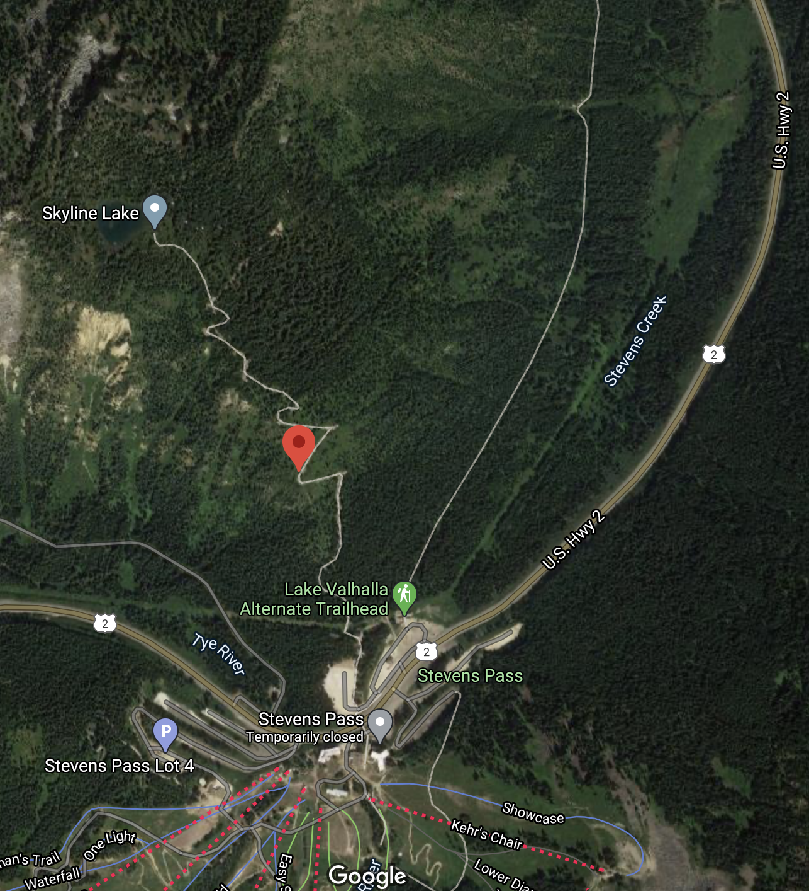
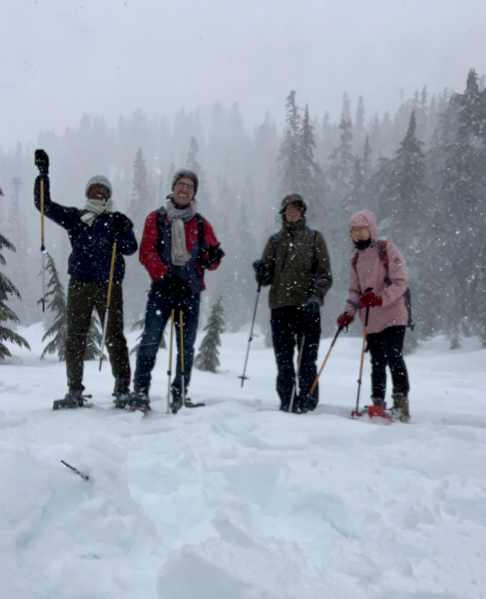

Overview of Skyline lake
Skyline Lake is a wonderful, short snowshoe route with enough elevation gain to have a great and an enormous experience. The lake is on Heather Ridge (also known as Skyline Ridge), which is the mountain on the north side of the Stevens Pass. On clear days the lake and ridge offer expansive views of the Alpine Lakes Wilderness to the south and the Glacier Peak Wilderness to the north. Early in the trip there are nice views of Cowboy Mountain and Big Chief Mountain towering over the Stevens Pass ski area. Comparable views are much harder to achieve with other snowshoe trips in the area. On partially cloudy days, the trip is often spectacular with clouds moving through the pass area, partially obscuring the views, and resulting in beautiful light conditions for photographers. The lake is a popular winter camping destination. The location at the top of the Stevens Pass helps when seeking good snowpack early in the winter season. When other locations are wet and slushy due to warmer weather, this is often a great place to enjoy dry snow conditions. The route to Skyline Lake has limited avalanche risk, so it can also be a good destination when other options are too dangerous. However, slopes west and east of the service road are avalanche-prone, so it is important to stick to the route. Overall, the route is suitable for beginners, but is fairly steep compared to some other beginner options, such as Gold Creek Pond or Hurricane Ridge. Because the ascent is entirely on the service road, it only requires fitness and is not in any way technically challenging.
Personal experience
I had a chance to go to the Skyline lake a couple of months ago with my colleagues. We started our trip to the Skyline lake early in the morning heading to the east from where we have started our journey. It took us about 2 hours to arrive the the place. Obviously (and also from what I have experienced in real time), the temperature was sub-zero. The oevrall senery and the snow hiking trail was a very first and mesmerising experience for me. During the moment we arrived there, was a snow flake on the air. Moreover, ground at the start of the hiking trail was covered with a thick glassy ice which Obviously was highly slippery. The same was for the main hiking course. I can roughly estimate the that the round trip snow hiking course was about 5 kms and it took us virtually about 2.5 hrs. This experience gave me the opportunity to get socialized with colleagues, know my surrounding and also ultimate refrashment.